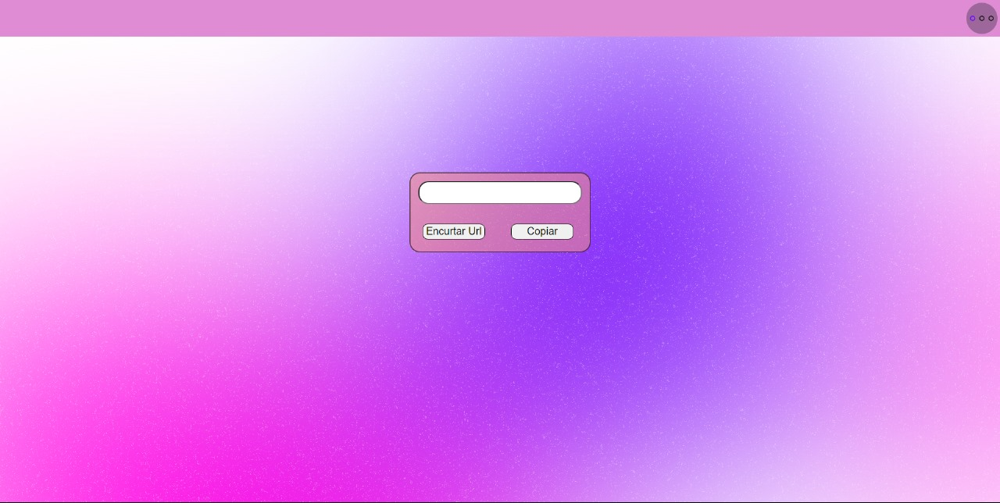

Olá, meu nome é
Mauricio Castelão
e sou um desenvolvedor front-end.

Meu nome é Mauricio Castelão sou um desenvolvedor front-end treine apaixonado por criar websites. Com habilidades sólidas em HTML, CSS e intermediarias em JavaScript, tenho um comprometimento na melhora de minhas capacidades técnicas, juntamente com a melhora de sites. Diagnosticado com TEA nível 1(transtorno do espectro autista) em 2022, sou proativo e sempre buscou soluções rápidas e funcionais para com desafios de desenvolvimento. Com uma mentalidade ágil e uma atitude positiva, estou sempre ansioso para contribuir significativamente em projetos e continuar aprendendo e crescendo profissionalmente.
PROJETOS
Segura:
Segura, um site de segurança de dispositivos, este site foi apenas um teste e ainda precisa ser melhorado. Contem ambos planos para empresas e pessoas contem valores e outras informações uteis
usados:


Site combo:

Outro experimento meu, o intuito desse site era
de juntar varias ferramentas em um so lugar. aqui
temos gerador de senhas, encurtador de links,
gerador de QRCode, e testador de cores hexadecimal
usados:
Calculadora de nota escolar:

aqui fiz uma calculadora de media anual e media bimestral, sendo a media bimestral 7 pontos, e no final do ano a suma de suas notas deve ser 28 pontos para passar se estiver abaixo disso você estará de provão
usados: